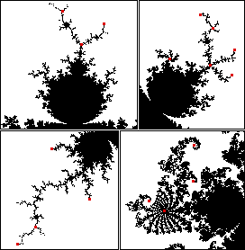

| For some other values of c, z0 = 0 does not belong
to a cycle, but some of its iterates belong to a cycle. For example, consider c = -2. |
| z0 = 0, |
| z1 = z02 + c = 02 - 2 = -2, |
| z2 = z12 + c = (-2)2 - 2 = 2, |
| z3 = z22 + c = 22 - 2 = 2, |
| and so zn = 2 for all n > 1. |
|
| That is, z0 = 0 is not itself fixed, but it iterates to
a point (z2 = 2 in this case) that is fixed. |
| Points c with this property are called Misiurewicz points. |
| All Misiurewicz points belong to the boundary of the Mandelbrot set. |
| They are branch tips, centers of spirals, and points where branches meet. |
| Some Misiurewicz points are indicated by red dots. |
|  |
| The Misiurewicz points are scattered throughout the boundary of
M: every circle centered at every boundary point encloses infinitely many Misiurewicz
points. |